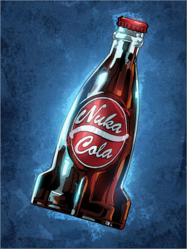

NUKA-COLA

YOU WILL NEED:
- 2 cups water
- 3 cups sugar
- Zest and juice of 1/2 orange
- Zest and juice of 1/2 lime
- Zest and juice of 1/2 lemon
- 1 cinnamon stick
- 3 cardamom pods
- 1/2 teaspoon coriander seed
- 2 star anise
- 1/4 cup browning sauce
- 1 teaspoon vanilla extract
TO MAKE NUKA-COLA SYRUP:
-
Combine the water, sugar, orange zest, lime zest, lemon zest,
cinnamon stick, cardamom pods, coriander seeds, and star anise in a large
saucepan and place over medium-high heat. Whisk until the sugar has dissolved and then bring
to boil. Reduce the heat to low and simmer for 10 minutes.
-
Remove the heat and strain into an airtight container. Add the orange, lime and lemon
juices (should be about 1/3 cup juice total). Mix in the browning sauce and vanilla extract.
Once cooled, cover and store in refrigerator for at least 12 hours and up to 2 weeks.
TO MAKE AN ICE-COLD GLASS OF NUKA-COLA
-
Combine 1 cup seltzer water, ice, and 5 to 7 tablespoons of Nuka-Cola syrup,
then stir together.
RETURN TO RECIPE LIST